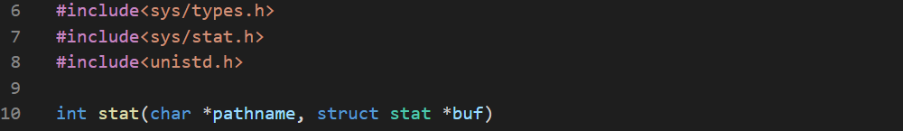

Metadata is data about a data. For example, the metadata of a file is the file size, permissions and creatation date. Some of the data may be OS dependent.
stat() is used to retrieve a file's metadata. It is specifically for Unix, and CL has it's own variant.

This function returns 0 if it is successful and 1 otherwise.
The second parameter is a pointer to a special type of pointer which points to a structure consisting a number of fields representing the file's metadata.
The st-dev field is an identifier of the device physically storing the file.

The dev_t is a synonym of any int type.
The st_ino field is the carrier of the entity dedicated to representing a file/directory and describing the disk location occupied on the media by the physical file. All inodes are identified by unique numbers across the device, not across the whole operating system.

The ino_t is a synonym of any int type.
The st_mode is a bit field representing the file's permissions. We can put any symbol and use the bitise operator & along with the st_mode field and check if the file has that permission.
- S_IFREG the file is a regular file.
- S_IFDIR the file is a a directory.
- S_IRUSR the owner has read permission.
- S_IWUSR the owner has write permission.
- S_IXUSR the owner has execute permission.
- S_IRGRP the group has read permission.
- S_IWGRP the group has write permission.
- S_IXGRP the group has execute permission.
- S_IROTH others have read permission.
- S_IWOTH others have write permission.
- S_IXOTH others have execute permission.

The st_link field shows the number of hard links of that file.

The nlink_t is a synonym of int types.
The st_uid field contains the ID of the owner of the file.

The uid_t is a synonym of int types.
The st_gid field contains the ID of a group sharing the file.

The gid_t is a synonym of any int type.
The st_rdev field contains a unique ID for a device.

The dev_t is a synonym of any int type.
The st_size field stores the size of the file, measured in bytes.

The off_t is an int type having the maximum file size as it's largest value.
The st_blksize field contains the size of the block being used on the device storing the file.

The blksize_t is an int type large enough to hold the largest block size.
The st_blocks field contains the number of blocks currently allocated to the file.

The blkcnt_t is an int type large enough to hold the maximum number of blocks.
The st_atim, st_mtim, st_ctim represents three times stored in struct timespec.
- st_atim stores the time of the very last access to the file.
- st_mtim stores the time of the very last change of the file. It also changes st_atim.
- st_ctim stores the time of the creation. It may mean the creation, permission modification and ownership changes.

Now we'll write a program which outputs all the metadata of a file.


Microsoft's implementation of stat() significantly differs from the original.
- The st_dev and st_rdev fields store the drive number (A: 0, B: 1 etc)
- The st_ino has no meaning in MS Windows and contains 0
- The st_mode partially reflects the windows file permission. Note that, the executable attribute is presumed from the file's name.
- st_nlink is always 1 on non_NTFS filesystems.
- st_uid and st_gid are always 0.
- st_blksize and st_blocks are absent in Windows.
- The st_atime and st_mtime fields contain values for NTFS volumes, otherwise copied from st_ctime.
The same code except st_blksize and st_blocks are compiled in Windows.